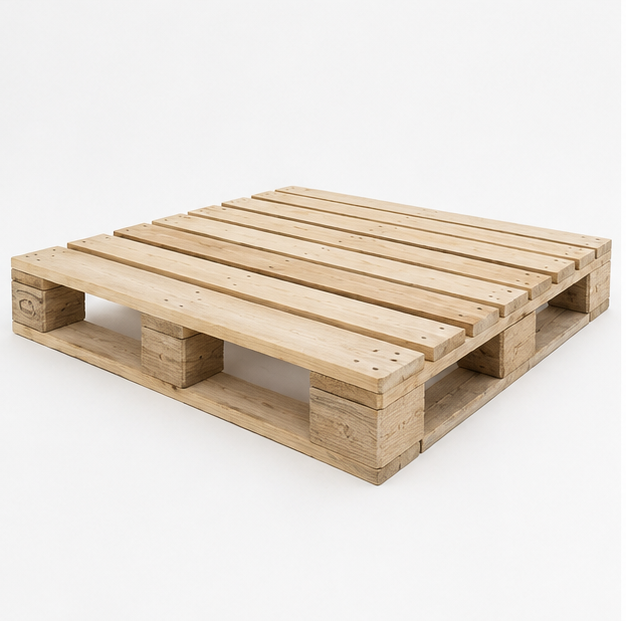

Wooden pallets manufactured in Sharjah for custom sizes, heavy loads, export shipments and dependable delivery across the UAE.

Parallel timber boards forming the load surface.
Solid blocks distributing weight through the pallet.
Thick timber beams reinforcing the structure.